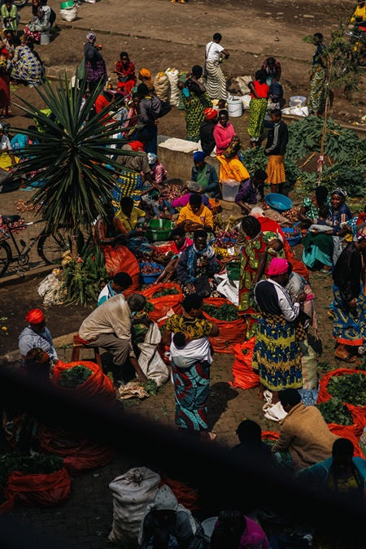

Une application mobile pour simplifier les demarches locales
15 mars 2026 — Technologie
La mairie lance une plateforme numerique pour les habitants.
L'information sans detour
15 mars 2026 — Technologie
La mairie lance une plateforme numerique pour les habitants.

12 mars 2026 — Education
La rentree scolaire en cinq chiffres cles dans les ecoles.
10 mars 2026 — Transport
Trois mois apres son lancement la ligne 7 fait ses comptes.

8 mars 2026 — Sport
Une qualification arrachee dans les dernieres minutes du match.

5 mars 2026 — Ville
Les commercants ont retrouve leurs etals lundi matin.
27 février 2026 — Culture
Les billets pour les trois soirs se sont vendus en quelques heures.
22 février 2026 — Environnement
La municipalite inaugure un espace de verdure de deux hectares.